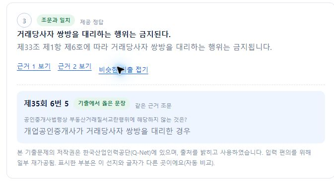

정답을 알아도 근거는 찾기 어렵다
선지 하나를 확인하려면 법률·시행령·시행규칙을 오가야 한다. 법령이 개정되면 같은 기출도 기준일에 따라 해설이 달라질 수 있다.
선지에서 근거 조문까지 한 화면에
기준일에 맞는 조문을 찾아 제공된 정답을 검증한다. 틀린 선지의 이유와 고친 문장을 보여 주고, 같은 조문을 다룬 기출을 연결한다.
한 문제를 분석해 보면
실제 실행 화면 · 제33조 연습문제 · 기준일 2024.10.26.
01
문제 입력

분석 중에도 이동 가능진행 상태를 확인하고, 결과가 준비되면 내 라이브러리에서 다시 연다.
02
정답과 오답의 근거 확인


03
비슷한 기출 비교
제35회 6번의 5번 선지도 같은 조문을 다룬다.
“개업공인중개사가 거래당사자 쌍방을 대리한 경우”
표현이 달라져도 거래당사자 쌍방을 대리했는지를 확인하면 같은 쟁점임을 알 수 있다.
검색 평가
25~36회 기출 · 검색 평가 802문제
정답 근거가 상위 5개에 포함된 비율
오프라인 검색 평가 · Recall@5
| 평가 과목 | 단어 BM25 | 의미 검색 | 혼합 검색 |
|---|---|---|---|
| 중개사법령 및 중개실무 337문제 | 93% | 90% | 92% |
| 부동산공법 465문제 | 89% | 80% | 86% |
BM25의 95% 신뢰구간은 중개사법령 및 중개실무 90~95%, 부동산공법 86~92%였다.
공법에서는 단어 검색이 9%p 앞섰다평가한 465문제에서 BM25의 Recall@5는 89%, 의미 검색은 80%였다.
서비스의 검색·검증 방식PostgreSQL 단어·벡터 검색으로 후보를 모은다. AI가 후보 조문을 근거로 판정하고, 서버가 인용과 시행일을 원문에서 확인한다. 근거가 부족하면 판단을 보류한다.
서비스 데이터 범위보고서 기준 법령 조문 2,422개와 기출 선지 3,950개를 구축했다.
기대효과
- 선지마다 근거 조문을 바로 확인해, 법령을 찾는 시간을 줄인다.
- 기준일의 현행 조문으로 다시 판정해, 개정으로 낡은 해설을 걸러 낸다.
- 같은 조문을 물은 기출을 묶어 보여 줘, 출제 변형을 스스로 익히게 한다.
- 근거 안에서만 판정하고 인용을 재확인하는 구조는 다른 법률 학습 도구에도 쓸 수 있다.